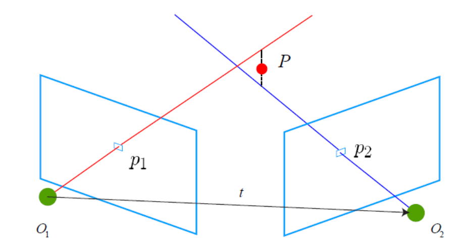

7. Triangulation¶
7.1. TriangulatePoint¶
从相应的图像点观察中对3D点进行三角测量。
-
Eigen::Vector3d
TriangulatePoint(const Eigen::Matrix3x4d &proj_matrix1, const Eigen::Matrix3x4d &proj_matrix2, const Eigen::Vector2d &point1, const Eigen::Vector2d &point2)¶
Eigen::Vector3d TriangulatePoint(const Eigen::Matrix3x4d& proj_matrix1,
const Eigen::Matrix3x4d& proj_matrix2,
const Eigen::Vector2d& point1,
const Eigen::Vector2d& point2) {
Eigen::Matrix4d A;
A.row(0) = point1(0) * proj_matrix1.row(2) - proj_matrix1.row(0);
A.row(1) = point1(1) * proj_matrix1.row(2) - proj_matrix1.row(1);
A.row(2) = point2(0) * proj_matrix2.row(2) - proj_matrix2.row(0);
A.row(3) = point2(1) * proj_matrix2.row(2) - proj_matrix2.row(1);
Eigen::JacobiSVD<Eigen::Matrix4d> svd(A, Eigen::ComputeFullV);
return svd.matrixV().col(3).hnormalized();
}
注解

证明：考虑某个路标点 \(X\) 被若干关键帧 \(k = 1 , 2 … n\) （上图的 \(O_i\) ）看到。
其中， \(X\in R^4\) 取齐次坐标，即 \(X = [x,y,z,1]^T\) 。每次观测为 \(x_k = [u_k,v_k,1]^T\) ，取相机归一化平面坐标（这样可以忽略内参）（？）。
记世界系到相机系的投影矩阵为 \(P_k = [R_k,t_k]\in R^{3 \times 4}\)
从而有投影关系：
\[\lambda_kx_k = P_kX\]
其中观测点的深度值 \(\lambda_k\) 未知
将投影关系写开：其中 \(p_{i,j}\) 表示 \(P_i\) 的第 \(j\) 行
\[\begin{split}\begin{cases}
\lambda_k u_k = p_{k,1}X = [R_{k,1}|t_{k,1}][x,y,z,1]^T\\
\lambda_k v_k = p_{k,2}X = [R_{k,2}|t_{k,2}][x,y,z,1]^T\\
\lambda_k = p_{3,k}X = [R_{k,3}|t_{k,3}][x,y,z,1]^T
\end{cases}\end{split}\]
把第三个式子带入前两个消去 \(\lambda_k\) ：
\[\begin{split}\begin{cases}
p_{k,3}Xu_k = p_{k,1}X\\
p_{k,3}Xv_k = p_{k,2}X
\end{cases}\end{split}\]
化简得：
\[\begin{split}\begin{cases}
(p_{k,3}u_k - p_{k,1})X = 0\\
(p_{k,3}v_k - p_{k,2})X = 0
\end{cases}\end{split}\]
由于需要求解的 \(X = [x,y,z,1]^T\) 有3个未知数，两个方程无法求解，因此需要至少两个点才可以求：
\[\begin{split}\begin{cases}
(p_{1,3}u_1 - p_{1,1})X = 0\\
(p_{1,3}v_1 - p_{1,2})X = 0\\
(p_{2,3}u_2 - p_{2,1})X = 0\\
(p_{2,3}v_2 - p_{2,2})X = 0
\end{cases}\end{split}\]
整理得到：
\[\begin{split}\left[
\begin{matrix}
p_{1,3}u_1 - p_{1,1}\\
p_{1,3}v_1 - p_{1,2}\\
p_{2,3}u_2 - p_{2,1}\\
p_{2,3}v_2 - p_{2,2}
\end{matrix}
\right]X = 0 ⇒ AX = 0\end{split}\]
其中 \(X\) 是 \(A\) 零空间的一个非零元素。三个未知数，有四个方程，系数矩阵必不满秩。
若对 \(A\) 进行SVD分解， \(A = U\Sigma V^T\) ，其中 \(\Sigma\) 是矩阵 \(A\) 特征值从大到小组成的对角矩阵。
移动位置为 \(AV = U\Sigma\) ，将 \(AX = 0\) 放入式子，则有：
\[\begin{split}A[v_1,...,X] = U \left[
\begin{matrix}
\sigma_1 & ⋯ & 0\\
⋮ & ⋱ & ⋮ \\
0 & ⋯ & 0
\end{matrix}
\right]\end{split}\]
求解 \(X\) 只要对 \(A\) 做SVD分解，再取 \(V\) 矩阵的最后一维即可。